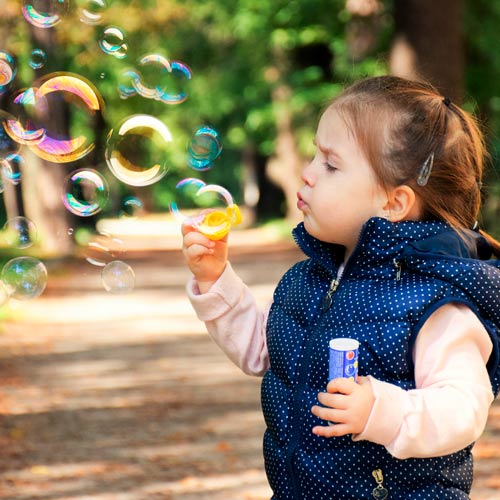

PROGRAMME ÉDUCATIF
À la Garderie FlipeFlape, nous travaillons avec Accueillir la petite enfance, un outil de travail suggéré par le ministère de l’Éducation, un programme complet qui correspond aux valeurs de la garderie. Ce programme privilégie la stimulation du développement global de l’enfant dans un environnement physique et humain riche en expériences de toutes sortes. Axé sur le développement harmonieux des enfants, cet outil vise l’évolution de leurs capacités psychomotrices, cognitives, langagières, sociales et émotionnelles en utilisant le jeu comme mode d’apprentissage. Plusieurs activités éducatives seront proposées à votre enfant tous les jours pour l’aider dans son développement, le tout, dans un climat propice à l’apprentissage.
